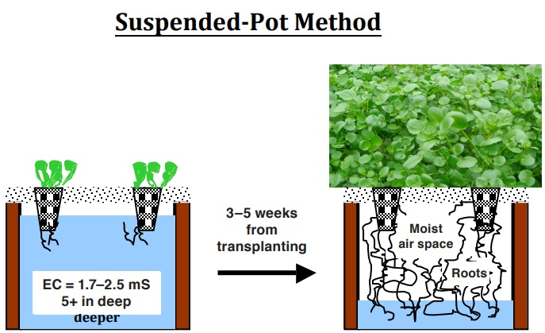
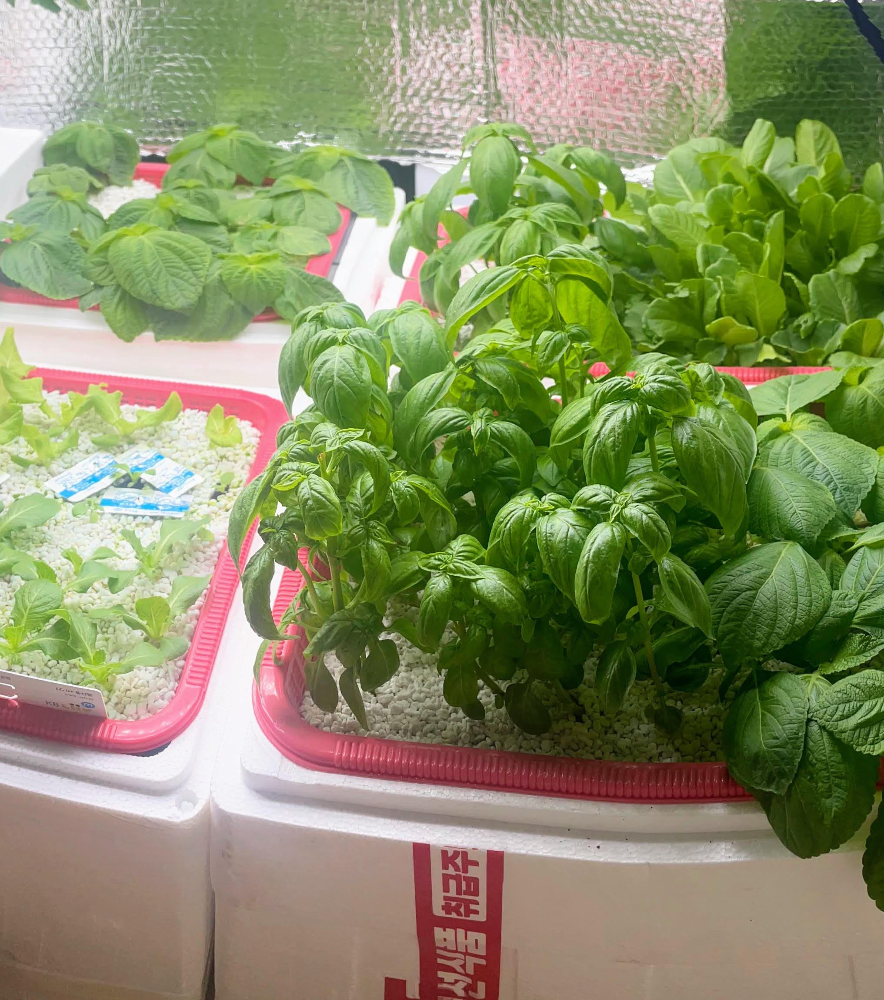
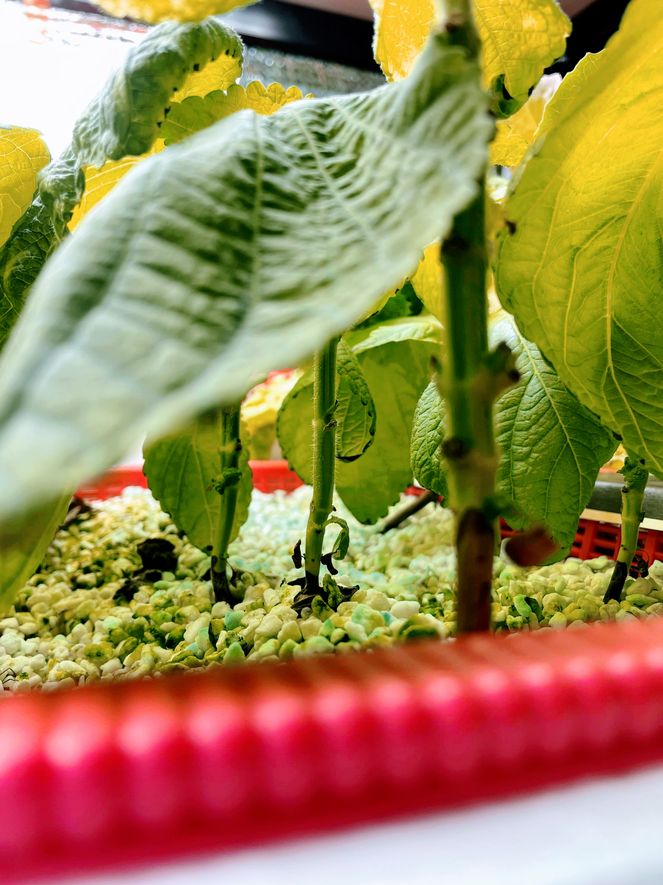
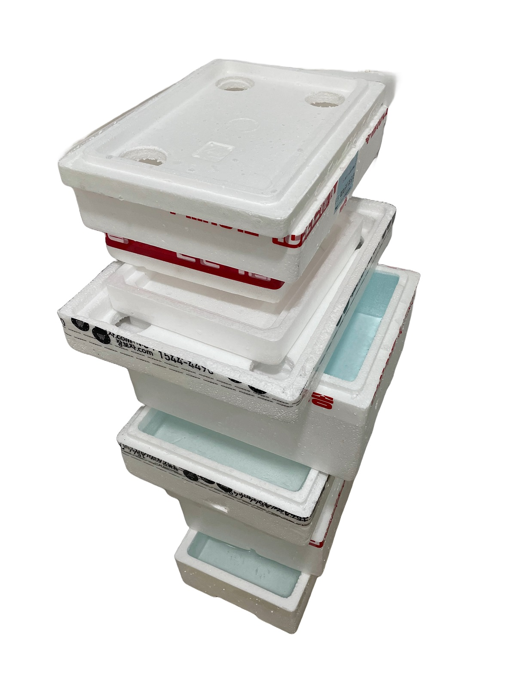

Kratky Method
Plundered from
- Growing Direct-Seeded Watercress by Two Non-circulating Hydroponic Methods
- Three non-circulating hydroponic methods for growing lettuce
Kratky Method Overview
A non-circulating hydroponic method invented by Prof. Kratky of Univ. of Hawaii. It is an extremely easy and cheap way for growing crops. It is suitable for leafy vegetables, or plants without excessive vegetative growth.

Water Tanks
It is not recommended to use clear or opaque containers. Clear containers should be painted or covered with tape. Otherwise, algae will be grown as water has a good amount of nutrient.
I recommend to use a polystyrene box (fish box). These are abundant, cheap, and disposable. But it is cumbersome to handle because of the huge volume. It is hard to find the appropriate size for a home. I'm using an 12.5L box that is similar to an trash can
Net Pots
Net pots are essential to suspend a sprout or seedling. These have to be filled with rockwool or sponges. Smaller ones are better for small-leaf plants. 10cm or 8cm are good for larger ones.
Rockwool or Sponge: For supporting a plant

Other equipments
Air pump: Air pump is only needed for initial few weeks or when the water volume is extremely large (20L+) to prevent root suffocation. The DO of water cannot be maintained above the nominal range by a simple pump/air stone. Air bubbles can be detrimental to the roots by water evaporation and splashing.
Net cover: A thin net cover is needed for insect and contamination prevention.
Problems with the Kratky Method
Algae and roots: As the water reduces, roots grow outside the water. The roots outside are used for air intake. Roots remaining in the water are for water and nutrient intake.

Stunted growth: Water temperature should be 18 to 22 celsius. Nutrient solution temperature above 25 celsius is harmful to the plants.

My own problems
Leak: It is critical. I'm using a plastic film for leak protection but it's not the ultimate solution. A water dispenser or an ultrasonic humidifier can be a cause of leak. The water dispenser is an easy and abundant supply of water, and sliently spill significant amount in short time.
Wet: A polysterene absorbs water, and the lower portion of a box eventually get wet. Be careful with a floor weak to water.

Seed or seedling: I recommend to use a seed. A seedling in soil pot is inconvenient to plant in a hydroponic pot. EC have to be incrementally increasrd from tap water or 0.6 from the targeted range (1.5+). Seedlings damaged from high EC will have a severe stunted growth.
Seeding containers: Any square-shaped plastic container would be OK.
A hand drill: and a holesaw .5~1cm smaller than pot sizes. You may use a craft knife.
Other: A scale, water containers or pet bottles, small containers with a tight closure, measuring cups (3+), syringes or pipettes (3+), a harvest scissor, rubber gloves, an EC meter.
A pH is not important as nominal nutrient water will have optimal range. There's no consistent foundings about that an explicit pH manipulation is helpful.